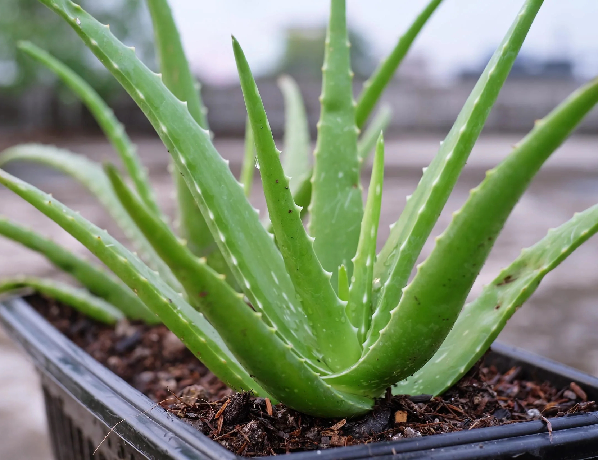

Aloe Vera is a succulent plant known for its thick, fleshy leaves filled with soothing gel. It is widely used for skin care and medicinal purposes. Aloe Vera is low-maintenance and perfect for indoor pots and small spaces.
Needs bright indirect sunlight. Can tolerate some direct sunlight but avoid intense heat.
Water sparingly. Allow soil to dry completely between watering.
Best growth at 18°C – 30°C. Avoid cold temperatures below 10°C.
Use sandy, well-draining soil such as cactus or succulent mix.
Harvest by cutting mature outer leaves when needed.
Used for skin care, burns, wounds, and natural remedies
Cause: Overwatering or poor drainage.
Solution: Reduce watering and use well-draining soil.
Cause: Too much water or rot.
Solution: Allow soil to dry and trim affected parts.
Cause: Underwatering.
Solution: Water slightly more frequently.
Cause: Excessive direct sunlight.
Solution: Move to indirect light.
Cause: Lack of sunlight or nutrients.
Solution: Provide better light and occasional feeding.